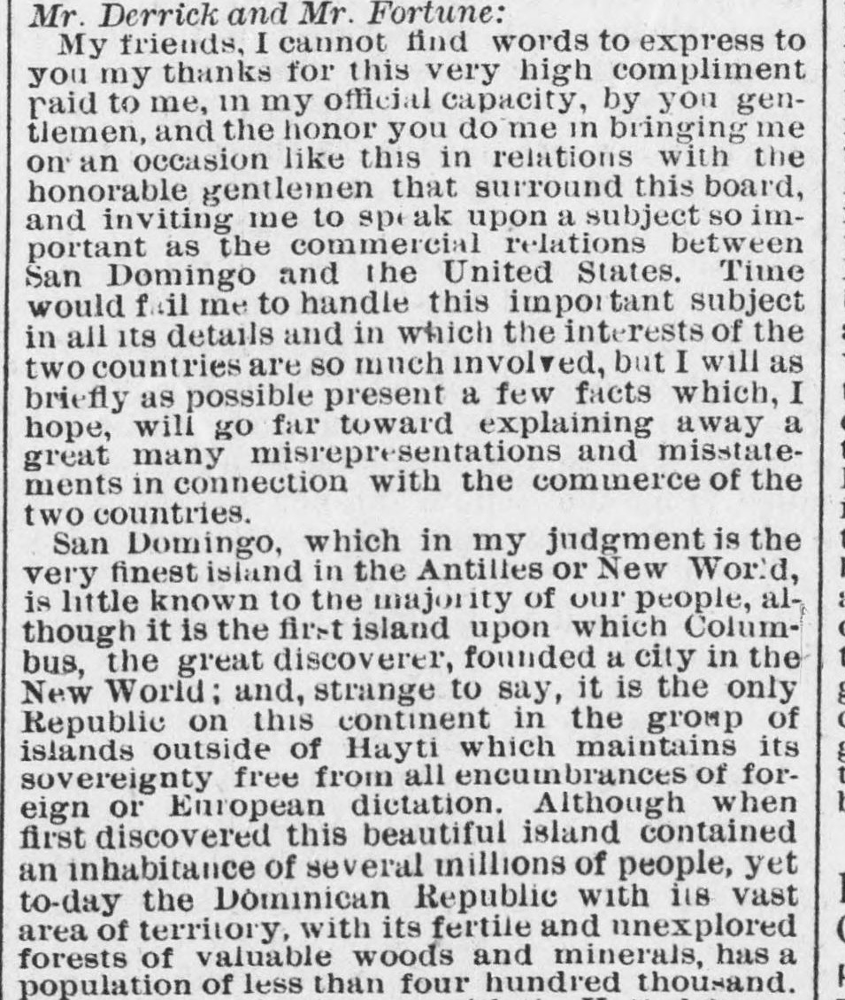

Honoring Consul AstwoodEn honor del cónsul Astwood
The New York Freeman. New York [N.Y.], May 14, 1887. Page 2. Published by T. Thomas Fortune. A weekly newspaper, 1884–1887.The New York Freeman. New York [N.Y.], 14 de mayo de 1887. Página 2. Publicado por T. Thomas Fortune. Periódico semanal, 1884–1887. View the originalVer el original

 See the full pageVer la página completa
See the full pageVer la página completa
The author of the article states that San Domingo is the finest island in the Antilles and the only republic in the island group—aside from Hayti—that maintains its sovereignty free from European dictation. Despite being portrayed in American journals as a revolutionary and barbarous country, the author argues that its political revolutions are less destructive to life and property than United States labor strikes. Furthermore, the writer notes that the island possesses a vast territory with a population under 400,000, and aims to correct misrepresentations regarding the commerce between the two countries.El articulista califica a Santo Domingo como la isla más rica de las Antillas y la única república insular —fuera de Haití— que preserva su soberanía exenta de tutela europea. Frente a la estampa que la prensa estadounidense divulga como comarca bárbara y sediciosa, arguye el autor que sus revueltas políticas ocasionan menos estragos a la vida y la propiedad que las huelgas obreras de los Estados Unidos. Subraya por añadidura que la isla encierra un vasto suelo patrio con una población inferior a los cuatrocientos mil habitantes, teniendo por propósito su escrito rectificar los falsos juicios esparcidos sobre el comercio entre ambos países.
FULL TEXT:TEXTO COMPLETO:
Mr. Derrick and Mr. Fortune:Sr. Derrick y Sr. Fortune:
My friends, I cannot find words to express to you my thanks for this very high compliment paid to me, in my official capacity, by you gentlemen, and the honor you do me in bringing me on an occasion like this in relations with the honorable gentlemen that surround this board, and inviting me to speak upon a subject so important as the commercial relations between San Domingo and the United States. Time would fail me to handle this important subject in all its details and in which the interests of the two countries are so much involved, but I will as briefly as possible present a few facts which, I hope, will go far toward explaining away a great many misrepresentations and misstatements in connection with the commerce of the two countries.Mis amigos, no puedo encontrar palabras para expresarles mis gracias por este muy alto cumplido pagado a mí, en mi capacidad oficial, por ustedes caballeros, y el honor que me hacen al traerme en una ocasión como esta en relaciones con los honorables caballeros que rodean esta mesa, e invitarme a hablar sobre un tema tan importante como las relaciones comerciales entre Santo Domingo y los Estados Unidos. El tiempo me faltaría para manejar este importante tema en todos sus detalles y en el cual los intereses de los dos países están tan involucrados, pero presentaré tan brevemente como sea posible unos pocos hechos que, espero, irán lejos hacia explicar muchas tergiversaciones y falsas declaraciones en conexión con el comercio de los dos países.
San Domingo, which in my judgment is the very finest island in the Antilles or New World, is little known to the majority of our people, although it is the first island upon which Columbus, the great discoverer, founded a city in the New World; and, strange to say, it is the only Republic on this continent in the group of islands outside of Hayti which maintains its sovereignty free from all encumbrances of foreign or European dictation. Although when first discovered this beautiful island contained an inhabitance of several millions of people, yet to-day the Dominican Republic with its vast area of territory, with its fertile and unexplored forests of valuable woods and minerals, has a population of less than four hundred thousand.Santo Domingo, que en mi juicio es la isla más fina de las Antillas o del Nuevo Mundo, es poco conocido por la mayoría de nuestro pueblo, aunque es la primera isla en la que Colón, el gran descubridor, fundó una ciudad en el Nuevo Mundo; y, extraño decir, es la única República en este continente en el grupo de islas fuera de Haití que mantiene su soberanía libre de todas las cargas de dictado extranjero o europeo. Aunque cuando fue descubierta por primera vez esta hermosa isla contenía una población de varios millones de personas, sin embargo hoy la República Dominicana con su vasta área de territorio, con sus fértiles e inexplorados bosques de valiosas maderas y minerales, tiene una población de menos de cuatrocientos mil.